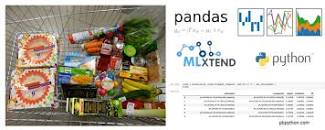

Customer churn, also referred to as customer attrition or customer defection, is a term used to describe the situation when customers terminate their association with a business or cease utilizing its products or services. It reflects the rate at which customers disengage or end their involvement with a company within a specific timeframe. The primary objective of this project was to predict potential churn customers using historical data provided by our client. It involved a classification problem that utilized a supervised machine learning approach.
To begin the analysis, I formulated queries to join tables and extract the necessary data from the database. Through data exploration and transformation, and employing statistical techniques such as Variance Inflation Factor, Recursive Feature Elimination, and assessment of multicollinearity, I reduced the initial set of 158 derived features to the most crucial eight features. These selected features were utilized as the final set for prediction.
The predictive model successfully identified over 4,000 potential churners, which has the potential to generate an additional annual revenue of over $2,000,000 for the business.


A recommendation engine in Python is a system designed to analyze user data and generate personalized suggestions for items or content that the user may find interesting. It employs various algorithms and techniques to predict user preferences and deliver relevant recommendations.
In this particular project, a collaborative filtering approach using implicit feedback is utilized. Implicit feedback refers to interactions between customers and products, without requiring explicit ratings from the user. The data is prepared and cleaned for analysis, and a sparse matrix is created to represent the non-zero interactions between customers and products. This helps manage memory usage and computational time.
The matrix is then fed into an ALS (Alternating Least Squares) model, which effectively captures patterns and relationships in the data. The recommender system leverages this model to suggest the next best product to a customer based on their historical purchases.
After evaluating the model's performance, it demonstrated excellent results with an AUC (Area Under the Curve) score of 77.5%. This score indicates that the system recommends items the user had actually purchased in the test set much more frequently than items they never ended up purchasing. Thus, the recommender system has been successfully trained and has outperformed the popularity benchmark.
By employing this recommendation engine, users can receive tailored recommendations that align with their preferences, leading to enhanced user experiences and increased customer satisfaction.

In this project, complex queries were utilized in Microsoft SQL Server to extract and join tables from transactional, demographic, and customer information sources. The extracted data was then saved to an Excel format and uploaded to Tableau Public. The purpose of this was to create reports and a management information reporting dashboard that provides valuable insights and key performance indices.
By combining and analyzing data from various tables, this project aimed to uncover meaningful relationships and generate actionable information. The resulting reports and dashboard created in Tableau Public offer a visual representation of the data, enabling stakeholders to gain a comprehensive understanding of the business's performance.
The reports and dashboard provide valuable insights into various aspects of the business, such as customer behavior, transactional patterns, and demographic trends. Key performance indicators (KPIs) are highlighted to track the business's progress and assess its success against set targets or benchmarks.
By employing sophisticated SQL queries, integrating relevant data, and leveraging the data visualization capabilities of Tableau Public, this project facilitates effective decision-making and enables stakeholders to have a comprehensive overview of the business's performance at a glance.

This project leverages advanced functions in Microsoft Excel to robustly clean and analyze data. To combine data from different tables and ensure a unified view, the VLOOKUP function is employed. This facilitates the creation of a consolidated table, which is then transformed into a pivot table to generate comprehensive reports and extract valuable insights that address the business question at hand.
By utilizing the VLOOKUP function, data integrity and accuracy are maintained, enabling the integration of information from disparate sources into a single cohesive table. This enhances the reliability of subsequent analyses and ensures consistency in the final reports.
The transformed data, organized into a pivot table, offers a dynamic and flexible representation of the information. This empowers users to explore and summarize the data based on various dimensions and metrics. The pivot table becomes a powerful tool for generating insightful reports, uncovering patterns, and extracting meaningful conclusions.
Through the use of advanced Excel functions and techniques, this project demonstrates a robust approach to data cleaning and analysis. By utilizing the VLOOKUP function and transforming data into a pivot table, it provides an efficient and reliable methodology for answering business questions and gaining valuable insights from the data.
Developing a machine learning model to identify potential donors, allowing the organization to target their campaign efforts more effectively. By leveraging advanced analytics and predictive modeling techniques, the model will analyze various factors and patterns to identify individuals who are more likely to donate to the organization's cause. This will enable the organization to optimize their resources and tailor their campaign towards those individuals, increasing the chances of successful fundraising.

Sales forecast involves predicting future sales volumes, revenues, or units sold within a specified time frame. It plays a crucial role in helping businesses anticipate and plan their operations, resource allocation, production, inventory management, and overall business strategy.
In this particular project, the focus is on creating a sales forecast for AHG Group across all regions where they have a presence. The forecast spans a period of five years and encompasses both online and in-store sales. To accomplish this, the project utilizes two forecasting models: seasonal autoregressive moving average (SARIMA) and Facebook Prophet.
The SARIMA model is a time series forecasting technique that takes into account seasonal patterns and dependencies within the data. By analyzing historical sales data, the SARIMA model is used to generate predictions for future sales, considering factors such as seasonal variations and past trends.
In addition to SARIMA, the Facebook Prophet model is employed. Facebook Prophet is a powerful forecasting tool that incorporates trend changes, seasonality, and other relevant factors in a flexible and intuitive manner. It leverages historical data to generate accurate forecasts for the desired time period.
By combining the strengths of SARIMA and Facebook Prophet, this project aims to provide AHG Group with a comprehensive and reliable sales forecast. The forecasted sales data can then be used to inform strategic decision-making, resource allocation, and planning for the next five years. Python is the programming language utilized for implementing and executing these forecasting models, enabling efficient and accurate sales forecasting for AHG Group across their various regions.

Market Basket Analysis is a technique employed in this project using the mlxtend library and association rules to uncover products that are frequently purchased together. The primary objective is to identify patterns of product co-occurrence and leverage this information to make recommendations to new customers. By understanding the historical purchasing behavior of previous customers, stores can implement upselling and cross-selling strategies to increase revenue and enhance customer satisfaction.
Through the application of association rules, this project identifies relationships and associations between products, enabling stores to make targeted recommendations. By suggesting complementary or related items based on past customer purchases, stores can enhance the shopping experience, increase average transaction value, and improve customer loyalty.
The utilization of the mlxtend library and association rules analysis empowers stores or companies to extract valuable insights from transactional data, enabling them to make informed decisions regarding product placement, marketing strategies, and customer engagement. Ultimately, this approach optimizes revenue generation and contributes to the overall success of the store or company.